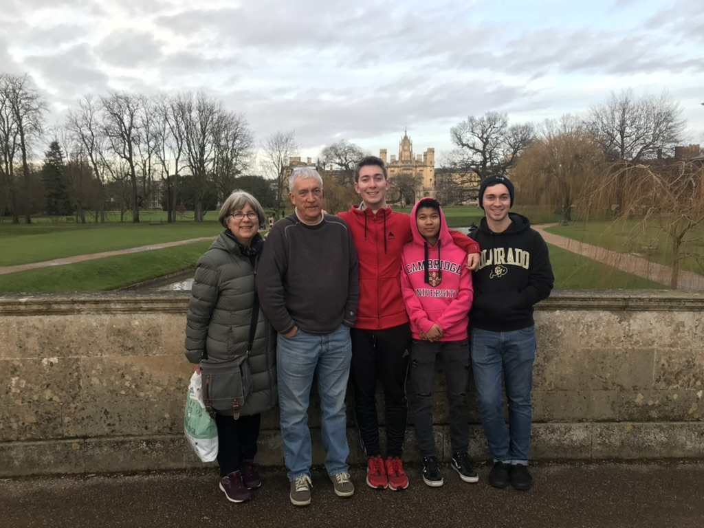

My mom was born and raised in Montreal, Canada. She came to the U.S. for her post grad education at Yale. Her grandparents are from Lithuania and migrated to Canada. I have been to Canada a few times and was heavily considering going to McGill University in Canada, but ultimately chose to go to CU Boulder.

My dad was born and raised in Wolverhampton, England. He also came to the U.S. for his post grad education and did it at Yale too. I have gone to England a few times because his entire family still lives there. He also has some of his family living in France too. My dad got me to fall in love with soccer and I watch the English Premier League every weekend now. I don't think I would be a soccer player or watch it if it wasn't for my dad.
My sister was adopted when she was 5 years old. She was born in Kathmandu, Nepal. When we were in the process of adopting her, my whole family traveled to Nepal. It was one of the most unique experiences I have ever been a part of. The culture there is so much different than the culture in the U.S. Visiting all the temples is something I will forever be grateful for. My sister also has a biological sister who was adopted to an Italian family who live in Rome. We have kept in contact with them because we don't want to keep the sisters apart. We have visited Italy numerous times and their family have visited us a few times too. We have also gone on a few vacations with them. They are considered part of our direct family.

My brother and I were both born in the U.S. He was born in Connecticut and I was born in Colorado. My family moved to Denver right before I was born so I was born and raised in Denver my whole life. My brother is 2 years older than me so did live in Connecticut for a few years before moving to Denver.
